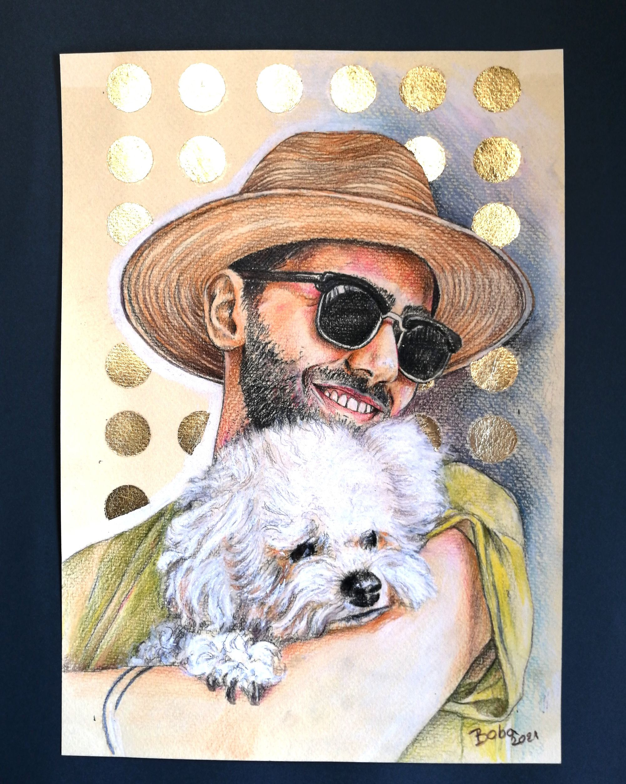

All my life I have been painting and drawing human figures and portraits applying various painting techniques.
I wanted to combine my artwork and creativity with my great love for animals, and that is how the idea to start drawing dogs portraits came to light.
It expanded to drawing all the other animals that bring joy to their owners, just the same as my dog brings joy to my family and me.
For my drawings I use the highest quality tools, pencils and colors. I can also incorporate dynamic gold, silver or copper details at your request.
I am artist from Novi Sad, the capital of the northern province in Serbia.
